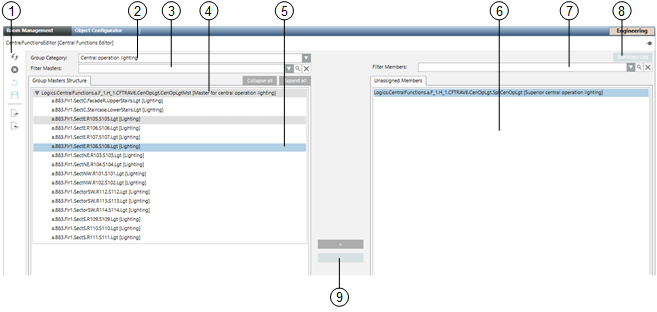

Central Room Functions Workspace
The Central Functions Editor associates rooms to a group. When operating with the central Function Viewer, individual rooms can be overridden based on the associated group.

Group members can only be associated on the same Desigo CC BACnet network and driver.
Distributed System:
The central room function editor is only available to the group master and group members via the driver for the current Desigo CC BACnet network. In an environment with multiple Desigo CC servers accessing the same BACnet subnetwork, only the group master and group members using the current driver are visible.
Additional limitations on distributed systems is available in section: Known Limitations if Splitting a BACnet Network to Multiple Servers (Distributed Systems).
Central Functions User Interface

Central Functions Editor | ||||
| Description | |||
1 | Toolbar | |||
2 | Group categories Indicates the type of group category for loading data. Only categories available in the application are displayed. | Graphic template available | ||
| Central operating mode | HVAC | No | |
| Central operation for lighting | Lighting | No | |
| Central emergency for lighting | Lighting | No | |
| Central operation for shading | Blinds | No | |
| Central emergency function for shading | Blinds | No | |
| Central protection for shading products | Blinds | No | |
| Central service shading products | Blinds | No | |
| Central facade shading for automatic | Blinds | Yes | |
| Central seasonal compensation | HVAC | Yes | |
| Supply chain air | HVAC | Yes | |
| Supply chain chilled water | HVAC | Yes | |
| Supply chain hot water | HVAC | Yes | |
3 + 7 | Filter members The list can be filtered (central functions and non-associated members). Filter occurs by partial strings. The entered filters are saved to a drop-down list for quick reuse (applies only to the applicable session and is not saved). Placeholders are not permitted. Delete the text in this field to remove the filter. |
| ||
4 | Central function with associated members Displays a list of available group members. |
| ||
5 | Group member Selected group member |
| ||
6 | Non-associated members Displays a list of non-associated group members. |
| ||
8 | Log file Actions are entered in the log file. |
| ||
9 | Buttons for association Associate/rescind for group master and group members. |
| ||
Toolbar for Central Functions Editor
Toolbar for Central Functions Editor | ||
Icon | Name | Description |
| Refresh | Refreshes objects in the current category tree. The category tree is reset to the state following the first drag-and-drop. |
| Clear display | Clears the group master tree. No changes are written to the automation station. Previous changes are lost. |
| Undo | Undo function: All actions up to the last save can be undone in stages. |
| Save | Saves the changed configuration on the automation station. The undo function no longer works after saving. |
| Export | Creates a data backup of the existing category view. You can restore the last saved state in the event of an incorrect reconfiguration. |
| Import | Saved data is written to the automation stations. Any prior changes are lost and cannot be restored. |